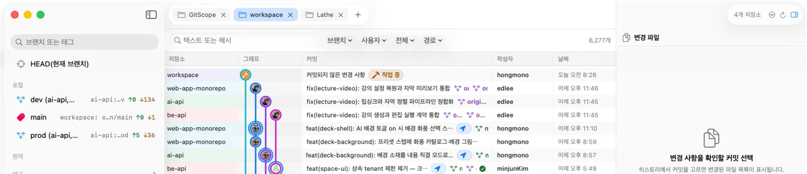
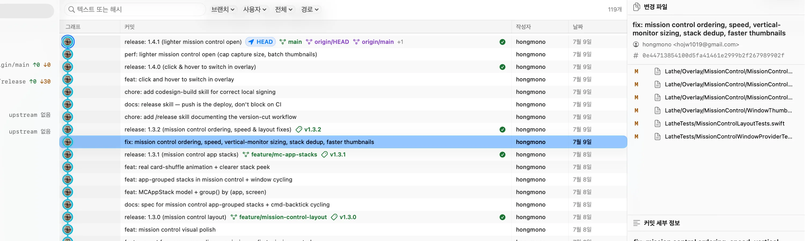

여러 저장소를 탭으로
저장소 사이를 즉시 이동하고, 재시작해도 열어 둔 탭을 그대로 복원합니다.
Git history, in focus.
여러 저장소의 커밋과 Actions 상태를 한 화면에서 읽고, 필요한 순간에만 안전하게 동기화하세요.

평소 쓰던 Git 흐름 그대로
저장소 사이를 즉시 이동하고, 재시작해도 열어 둔 탭을 그대로 복원합니다.
↑0↓30
HEAD, 브랜치, 태그와 앞선 커밋, 뒤처진 커밋을 한 흐름에서 봅니다.
✓ CI
커밋마다 실행 상태를 확인하고, 워크플로와 Job 결과로 바로 이동합니다.
브랜치 메뉴에서 동기화하고 단축키로 모든 원격 변경을 가져옵니다.
Signal over noise
현재 위치와 작업 중인 파일, Actions 결과를 타임라인 안에 표시해 다음 행동에 필요한 맥락을 놓치지 않습니다.

Install with Homebrew
Apple Silicon과 macOS 14 이상에서 사용할 수 있습니다.
brew install hongmono/tap/gitscope
Homebrew를 사용하지 않는다면 DMG 직접 받기